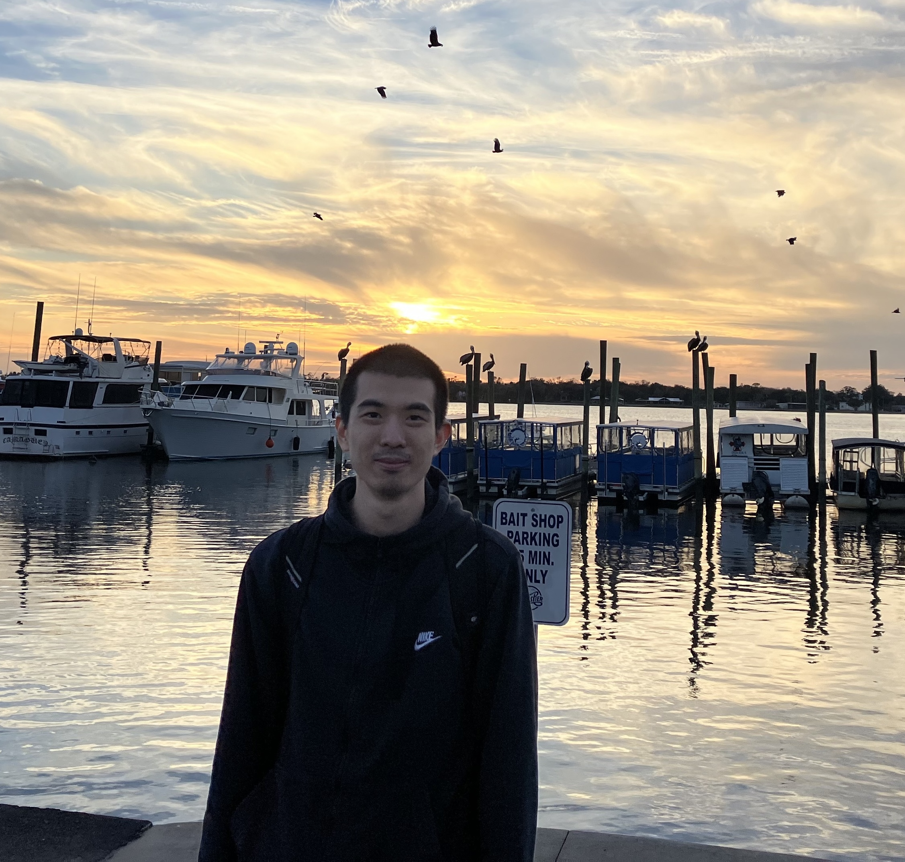

<!-- Start of Group-->
<section class="resume-section p-3 p-lg-5 d-flex align-items-center" id="group">
<div class="w-100">
<h2 class="mb-4">Data Driven Decision Intelligence (D3i) Lab </h2> 

    <style>
        .member {
            display: flex;
            align-items: center;
            margin-bottom: 20px; /* Adjust the spacing as needed */
        }

        .member img {
            border-radius: 50%;
            max-width: 150px; /* Adjust the size as needed */
            height: auto;
            margin-right: 15px; /* Adjust the spacing between image and text */
        }
    </style>
	
    <div class="group" id="faculty">
        <h3><strong>Faculty</strong></h3>
        <div class="member">
             
	    <br>
            <p><strong><a href="https://haipeng-chen.github.io/">Haipeng Chen</a></strong><br>
	    Assistant Professor, William & Mary<br>
	    Contact: hchen23@wm.edu <br>
	    </p>
        </div>
    </div>

    <div class="mb-3" id="phd">
        <h3><strong>PhD Students</strong></h3>
		
		<div class="member">
	    
	    <br>
            <p><strong><a href="https://xfeng01.github.io/">Xinsong Feng</a></strong> (Fall 2025 - ) <br>
	    Research interests: Reinforcement Learning, Diffusion Models, LLMs<br>
	    Education: BS@CQU (Rank:1/116), MS@UCLA (Previously a D3i intern)<br>
	    Contact: xfeng06@wm.edu <br>
	    </p>
    	</div>

		<div class="member">
	    
	    <br>
            <p><strong><a href="https://github.com/wmd3i">Yuheng Li</a></strong> (Fall 2025 - , co-advised with Yanhai Xiong) <br>
	    Research interests: Reinforcement Learning, Optimization, LLMs<br>
	    Education: BS@SEU (Rank: 7/36), MS@SEU (Previously a D3i intern)<br>
	    Contact: yli95@wm.edu <br>
	    </p>
    	</div>
	
		<div class="member">
	    
	    <br>
            <p><strong><a href="https://dearhannah.github.io/">Han Meng</a></strong> (Fall 2024 - ) <br>
	    Research interests: Reinforcement Learning, Diffusion Models, Physics<br>
	    Education: BS@USTB (5/360), MS@MSU <br>
	    Contact: miss.menghan@gmail.com <br>
	    </p>
    	</div>

		<div class="member">
	    
	    <br>
            <p><strong><a href="https://steven202.github.io/chenan.github.io/">Chenan Wang</a></strong> (Fall 2024 - )<br>
	    Research interests: Reinforcement Learning, Diffusion Models<br>
	    Education: BS@Northeastern (Honors), MS@Drexel <br>
	    Contact: cwang33@wm.edu <br>
	    </p>
    	</div>

	    <div class="member">
	    
	    <br>
            <p><strong><a href="https://littlestone111.github.io/">Yang Li</a></strong> (Fall 2023 - )<br>
	    Research interests: Diffusion Models, LLMs, Health<br>
	    Education: BS@UCSD (Honors), MS@Columbia <br>
	    Contact: yli102@wm.edu <br>
	    </p>
    	</div>
		
    </div>


    <div class="group" id="masters">
        <h3><strong>Masters Students</strong></h3>
        <ul>
		<li><strong>Isabella (Fangzhi) Li</strong> (MS@W&M, previously a D3i undergrad student)</li>
	    <li><strong>Mowbray RV</strong> (MS@IIT Madras. Research Interests: RL,GNNs)</li>
	    <li><strong>Haochen You</strong> (MS@Columbia)</li>
        </ul>
    </div>

    <div class="group" id="undergraduates">
        <h3><strong>Undergraduate Students</strong></h3>
        <ul>
	    <li><strong>Niaz Mohaiman Abtahi</strong> (BS@BUET)</li>
		<li><strong>Jimmy Bach</strong> (BS@W&M, co-advised with Carrie Dolan)</li>
		<li><strong>U Mong Sain Chak</strong> (BS@BUET)</li>
	    <li><strong>Pranjali Gupta</strong> (BS@W&M, co-advised with John Swaddle)</li>
	    <li><strong>Michael Martinez</strong> (BS@W&M, Research Interests: Diffusion Language Models.)</li>
	    <li><strong>Daniel Shi</strong> (BS@W&M. Research Interests: GenAI)</li>
	    <li><strong>Syna</strong> (BE@Chitkara University)</li>
	    <li><strong>Xuzhong Wang</strong> (BS@W&M. Research Interests: RL, LLMs)</li>
        </ul>
    </div>


    <div class="group" id="High-school">
        <h3><strong>High School Students</strong></h3>
        <ul>
	    <li><strong>Madeleine Chen</strong> (HS@Virginia Governor's High School)</li>
        </ul>
    </div>

    <div class="group" id="alumni">
        <h3><strong>Alumni</strong></h3>
        <ul>
		<li><strong>Michael Wang</strong> (BS@W&M)</li>
		<!--<li><strong>Green Kedia</strong> (BS@IIT-Dhanbad)</li>-->
		<li><strong>Rui Zhu</strong> (BS@NJU)</li>
		<li><strong>Boris Song</strong> (BS@XMU & Exchange@Berkeley)</li>
		<li><strong>Burkan Bereketoglu</strong> (MS@METU -> PhD@UniSussex)</li>
		<li><strong>Yaqi Liu</strong> (BS@W&M -> ME@GaTech)</li>
	    <li><strong>Mahmud Wasif Nafee</strong> (BE@BUET -> PhD@RPI)</li>
        <li><strong>Wenzhe Zhang</strong> (MS@NUS -> MS@NUS)</li>
	    <li><strong>Tao Feng</strong> (MS@Edinburgh -> PhD@ZJU)</li>
	    <li><strong>Han Xu</strong> (MS@UIUC -> SE@Amazon)</li>
	    <li><strong>Yaolong Yu</strong> (BS@SDU -> RA@CUHK)</li>
	    <li><strong>Zihan Yu</strong> (BS@BJTU -> MS@HKU (with fellowship))</li>
        </ul>
    </div>
</div>	   

</section>
